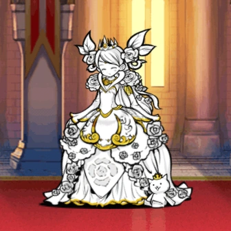

Radiant Aphrodite

The best thing about her is range. She has 600 range, which is alot higher than the majority of enemies in early to mid game, including the infamous Master A. With this kind of range, she can be used as a generalist throughout stories of legends and early stages of uncanny legends, regardless of the enemies' trait.
Another thing that is worth mentioning is her effect: massive damage on alien. It allows Aphrodite to completely obliterate all chapters of Into the future and make this game much more easier.